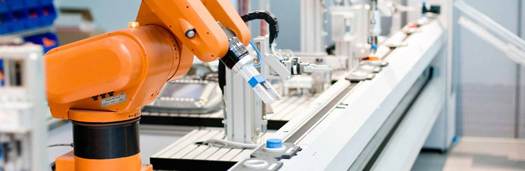

Additive manufacturing
spraying, extrusion, curing, melting, lamination, etc.
Working Group 21 is a sub group of the international association for shell and space structures (IASS). Within the scope of innovative lightweight structures the working group invites engineers, designers, artist, inventers and researches to exchange knowledge and information. You can support our initiative by joining our workgroup and by attending and joining our activities.
The tension between idea and technique has taken an interesting turn. The possibilities offered by new modelling software and smart materials have led to very complex architecture in all its wealth and beauty. The building designs developed tremendously from mass production to very sophisticated, just-in-time-shape-and-place production. Construction of advanced building structures has become industrial design. In spite of what has been achieved, the gap between idea and technique has become larger. Working group 21 aims to narrow this gap by providing a platform to exchange research and application of advanced manufacturing and materials.
The working group focuses on several topics of the manufacturing process. Researchers are invited to exchange knowledge, to organise sessions and to participate in workshops and exhibitions. Beside creating a knowledge platform within the IASS we want to introduce interdisciplinary cutting-edge techniques and developments into the built environment. In general the working group aims to bridge the gap between mechanical engineering and the built environment.
Mission: The construction of lightweight structures by cutting-edge techniques and smart materials for the built environment.
spraying, extrusion, curing, melting, lamination, etc.
flexible,fabric,adjustabl,inflatable formwork, vacuum,blow moulding, etc.
spinning, (3D) weaving, (3D) knitting, non-woven, etc.
mechatronics, manufacturing automation, drones, etc.
polishing, coating, electrotyping, abrasive blasting, etc.
milling, electro-chemical erosion, laser cutting, water jet cutting, etc.
micro and nano-fabrication, (bio)composites, metals (alloys), ceramics, natural/synthetic polymers, shape memory alloys etc.
bolting, welding, lamination, clamping, stitching, rivets, flexible joints, kinetic joints, zip fasteners, hook and loop fasteners, interlocking connections, etc.
A competition and exhibition of innovative pavilions was organised at the 2015 IASS symposium in Amsterdam.
ISOFF organized a flexible formwork workshop and symposium at the 2015 IASS symposium in Amsterdam.
Sessions by several people are organised concerning fabrication and manufacturing at the 2017 symposium in Hamburg.
We organize a student competition for the design & construct of ice structures in Harbin China from 17 to 22 december 2017. Visit Strctural Ice
We intend to organize a session on flexible formwork at the 2018 symposium in Boston.
We intend to organize an exhibition/competition of innovative pavilions at the 2019 symposium in Barcelona.
| Given Name | Family Name | Country | Affiliation |
|---|---|---|---|
| Arno | Pronk (co-chair) | Netherlands | Eindhoven University of Technology |
| John | Orr (co-chair) | United Kingdom | University of Bath |
| Lars | De Leat | Belgium | Vrije Universtiteit Brussel |
| Lancelot | Coar | Canada | University of Manitoba |
| Paulo | Cruz | Portugal | University of Minho |
| Philipp | Eversmann | Switzerland | ETH Zurich |
| Andereas | Falk | Sweden | KTH Royal Institute of Technology |
| Günther | Filz | Austria | Universität Innsbruck |
| Manfred | Grohmann | Germany | University of Kassel |
| Walter | Jack | United Kingdom | Artist |
| Harald | Kloft | Germany | Technische Universitat Braunschweig |
| Benjamin | Kromoser | Austria | Technische Universitat Wien |
| Olga | Larsen | Denmark | The Royal Danish Academy of Fine Arts |
| Jana | Lipkovski | Germany | Florian weinmann, design studio |
| Massimo | Majowiecki | Italy | University of Bologna |
| Elke | Mergny | Belgium | University of Liège |
| Caitlin | Mueller | United States | Massachusetts Institute of Technology |
| Cristina | Nan | United Kingdom | University of Edinburgh |
| Ruy | Pauletti | Brasil | University of são Paulo |
| Remo | Pedreschi | United Kingdom | University of Edinburgh |
| Robert | Schmitz | United States | Structural Engineer |
| Gennaro | Senatore | Switserland | Swiss Federal Institute of Technology (EPFL) |
| Alexander | Stahr | Leipzig | Hochschule für Technik, Wirtschaft und Kultur Leipzig |
| Romuald | Tarczewski | Poland | Wroclaw University of Technology |
| Patrick | Teuffel | Netherlands | Eindhoven University of Technology |
| Michela | Turrin | Netherlands | Delft University of Technology |
| Wim | van Beek | Canada | Mammoet |
| Ivo | Vrouwe | Belgium | KU Leuven |
| Rosemarie | Wagner | Germany | Karlsruhe Institute of Technology |
| Yue | Wu | China | Harbin Institute of Technology |